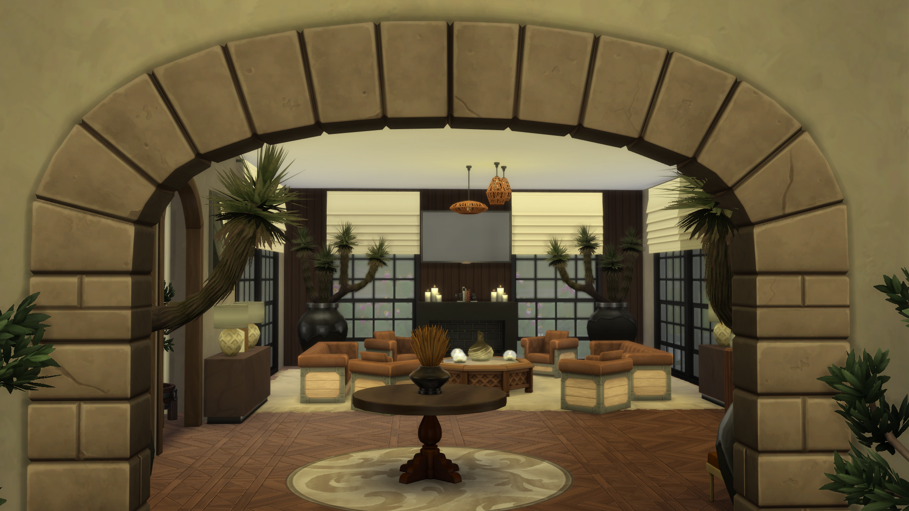

In mijn vrije tijd vind ik het geweldig om bestaande huizen volledig te renoveren in The Sims 4. Het gaat mij niet om het bouwen vanaf nul, maar om het zien van potentieel in een ruimte die al bestaat. Ik ben die persoon die uren kan besteden aan het strippen van een virtuele woning om de indeling volledig logisch en modern te maken. Ik vind het fijn om bezig te zijn met hoe een ruimte eruitziet en hoe de flow van de kamers verbeterd kan worden. Voor mij is het een uitdaging om binnen de beperkingen van een bestaand gebouw toch een strak en professioneel resultaat neer te zetten.
Dit proces van renoveren lijkt verrassend veel op programmeren. Je begint vaak met een basis die niet optimaal werkt, en je moet uitzoeken hoe je die structuur kunt verbeteren zonder alles kapot te maken. Dat oog voor detail en het streven naar een betere indeling neem ik mee naar mijn projecten bij Thomas More. Soms kan ik wel wat ongeduldig worden als een renovatie niet meteen de juiste vibe geeft, maar dat zorgt er juist voor dat ik extra hard doorwerk tot het eindresultaat echt goed werkt. Ik stop pas als de indeling, net als mijn code, volledig efficiënt is.

Mijn passie voor renovatie stopt niet bij de muren. Ik ben gefascineerd door hoe je een verouderd systeem kunt transformeren naar iets moderns en gebruiksvriendelijks. Een goede renovatie moet aanvoelen alsof het altijd zo had moeten zijn, of het nu een digitaal huis is of een website die ik aan het optimaliseren ben.
Gamen, films en sociale connectie
Naast het creatieve luik game ik ook graag samen met vrienden. Het is voor mij de ideale manier om te ontspannen na een dag intensief focussen op code. Of we nu tactieken bespreken of gewoon wat rondhangen, die sociale interactie is essentieel. Het zorgt voor de nodige afwisseling en herinnert me aan het belang van teamspirit, iets wat ik ook in mijn studentenjobs bij H.Essers en Hét Frituur erg heb gewaardeerd. Samenwerken om een doel te bereiken geeft me veel voldoening.
Verder kan ik ook echt genieten van een goede film, een serie of gewoon wat muziek op de achtergrond. Soms moet je even volledig uitpluggen om je gedachten te ordenen. Muziek is voor mij een onmisbare factor; ik heb bijna altijd een afspeellijst opstaan die past bij de vibe van mijn werk. Het helpt me om in een flow te komen, of ik nu aan het studeren ben of een renovatieproject aan het afronden ben. Het geeft me de ruimte om met een frisse blik naar problemen te kijken.
Waarom renoveren me een betere programmeur maakt
Mijn hobby's vormen de basis van hoe ik als persoon in elkaar zit. Ik ben een gemotiveerde student die graag strak en professioneel werkt, maar wel met een creatieve blik. Mijn lichte ongeduld als een renovatie of een bug niet meteen opgelost is, is eigenlijk mijn grootste motor: het pusht me om door te gaan tot alles perfect staat. Of ik nu een stuk code optimaliseer of een virtuele woonkamer herinricht, de voldoening van een geslaagde transformatie blijft hetzelfde.
Uiteindelijk dragen al deze interesses bij aan mijn achtergrond en wie ik ben buiten mijn studies. Het zorgt voor een gezonde balans tussen het technische aspect van ICT en het creatieve luik van design en ontspanning. Ik ben ervan overtuigd dat die focus op "verbeteren wat er al is" me helpt om niet alleen code te schrijven die werkt, maar ook code die logisch, duurzaam en visueel aantrekkelijk is voor iedereen.